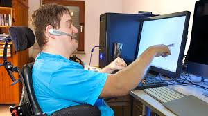

People with disabilities face a range of difficulties when accessing or browsing the internet (world wide web) these can be off putting to them as they just want to be normal people. And not be put into a bubble where they can only access the internet with the help from family/friends. They want to do it themselves, and if need be ask help when required. BUT asking help is not a bad thing as it helps them to become themselves and in theory, don’t need help in the long run from anybody else.

Online (web access) there are hundreds of web access tools or (WAT) to help them gain their independence. These can range from simple tools such as for example COBRA/Hal/JAWS (Job Access with Speech) which just reads what’s on the screen (people who are blind/hard seeing) to screen magnifiers which all search engines now do. (Google/Safai/Yahoo/Microsoft Edge for example) [9] [10]
hobo website Is the ninth reference.
monsido Is the tenth reference.
Keyboard access is KEY as well to browsing the internet and the normal QWERTY keyboard will not cut it if a user is blind or partly hard of seeing. They would have to have a modification to the usage and how they type. And that would come in the form of a braille or an refreshable keyboard which would help them better than the normal QWERTY one.
With people who have physical disabilities they would be using either a set of systems called ‘Sip and Puff’ which uses the user’s mouth as commands to access the internet or they could be using either ‘Hands free’ which uses a tracker on the user's head to pinpoint what they want to view or express. Finally the last option they could use is ‘Voice’ which is most commonly available in search engines now (Google Search) to locate what they want to view, either search on the internet or view something on youtube for example.